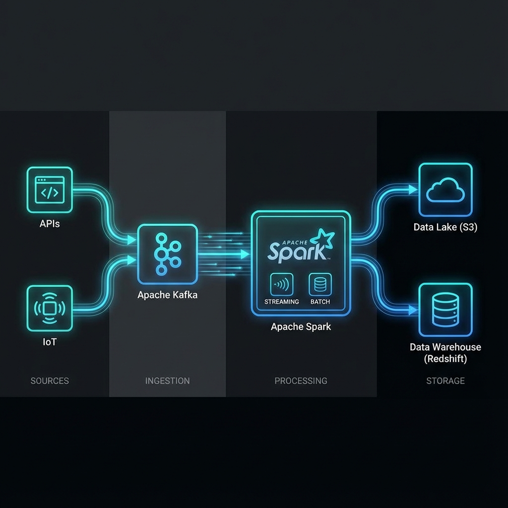

Real-time Data Streaming Pipeline
Processing 1M+ events per minute with sub-second latency using Kafka and Spark.

The Challenge
The client needed to ingest and process massive amounts of clickstream data from their global e-commerce platform in real-time. The existing batch-based legacy system had a latency of 24 hours, making it impossible to implement real-time personalization or fraud detection.
The Solution
I architected a scalable streaming pipeline on AWS. The solution decouples storage and compute, ensuring high availability and fault tolerance.
- Ingestion: Apache Kafka (Amazon MSK) captures events from the web servers.
- Processing: Apache Spark Streaming (on EMR) consumes topics, performs aggregations, and enriches data with user profiles.
- Storage: Processed data is written to a Data Lake (S3) in Parquet format for historical analysis and to Redshift for real-time dashboards.
Key Implementation Details
We implemented Structured Streaming ensures exact-once semantics. We also set up monitoring using Prometheus and Grafana to track consumer lag and cluster health.
# Sample Spark Structured Streaming logic
def process_stream(spark):
df = spark.readStream \
.format("kafka") \
.option("kafka.bootstrap.servers", "broker:9092") \
.option("subscribe", "clickstream_events") \
.load()
# Parse JSON and aggregate
processed_df = df.select(from_json(col("value").cast("string"), schema).alias("data")) \
.select("data.*") \
.groupBy(window("timestamp", "1 minute"), "user_id") \
.count()
# Write to S3
query = processed_df.writeStream \
.outputMode("append") \
.format("parquet") \
.option("path", "s3://my-datalake/events/") \
.option("checkpointLocation", "s3://my-datalake/checkpoints/") \
.start()
query.awaitTermination()
Results & Impact
< 500ms
End-to-End Latency
1M+
Events Per Minute
99.9%
Uptime